本次完成Phase00、01、02的外形候选与文件检查，停在外形评审。
没有进入浮力、骨架、推进、蒙皮或制造阶段。
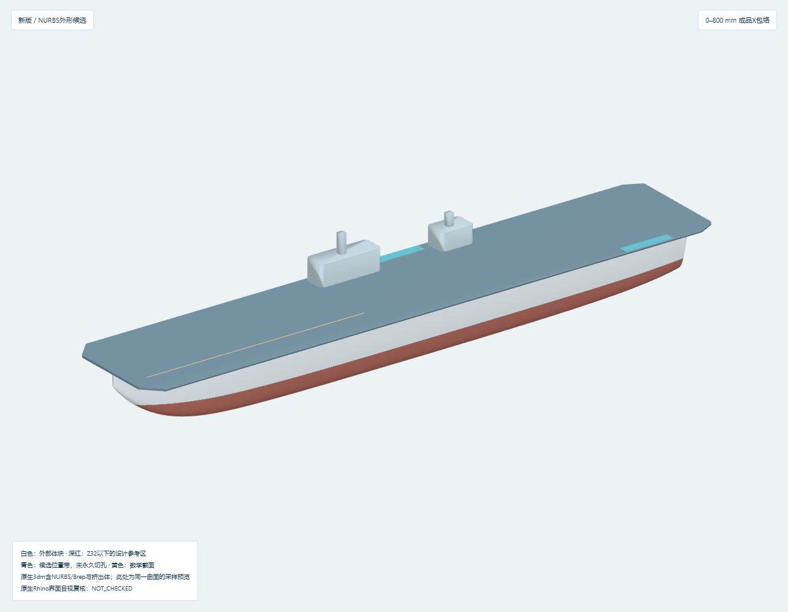
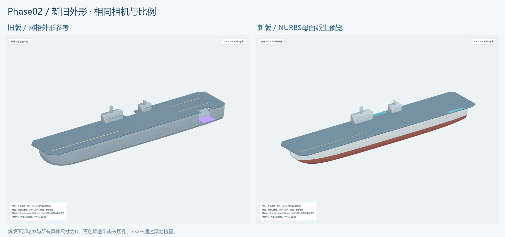
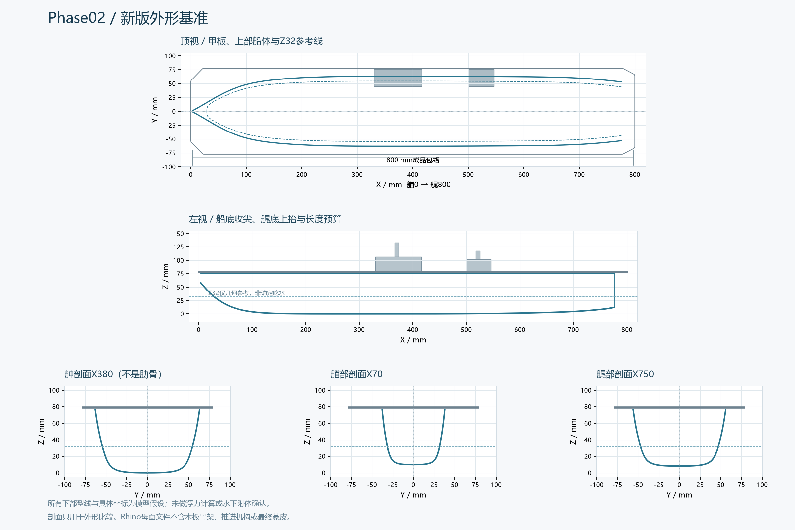
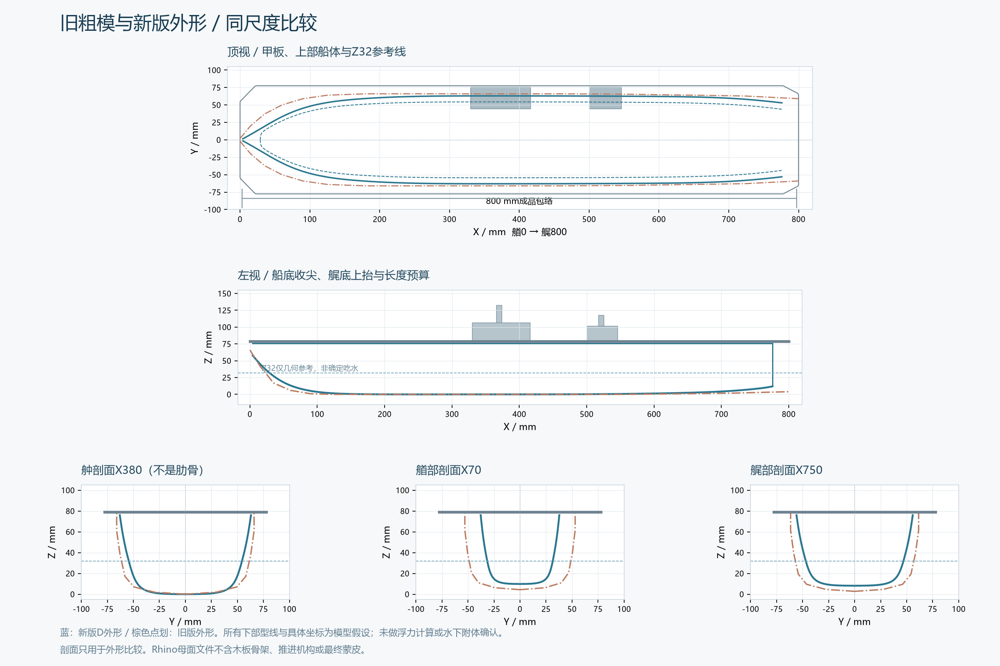
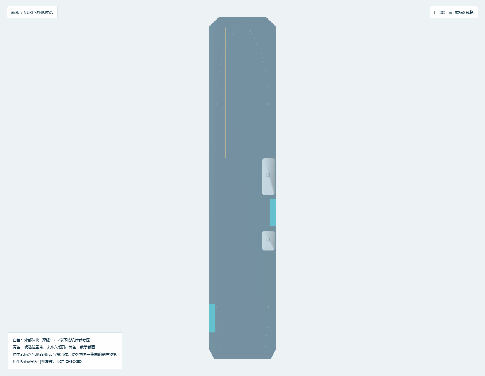
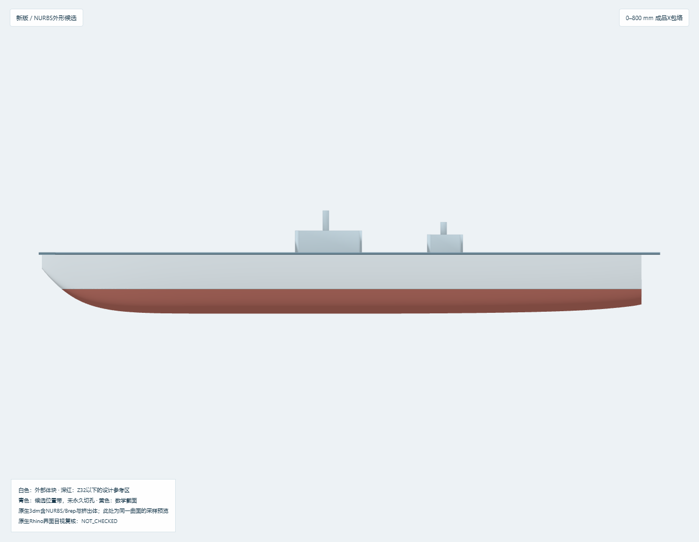
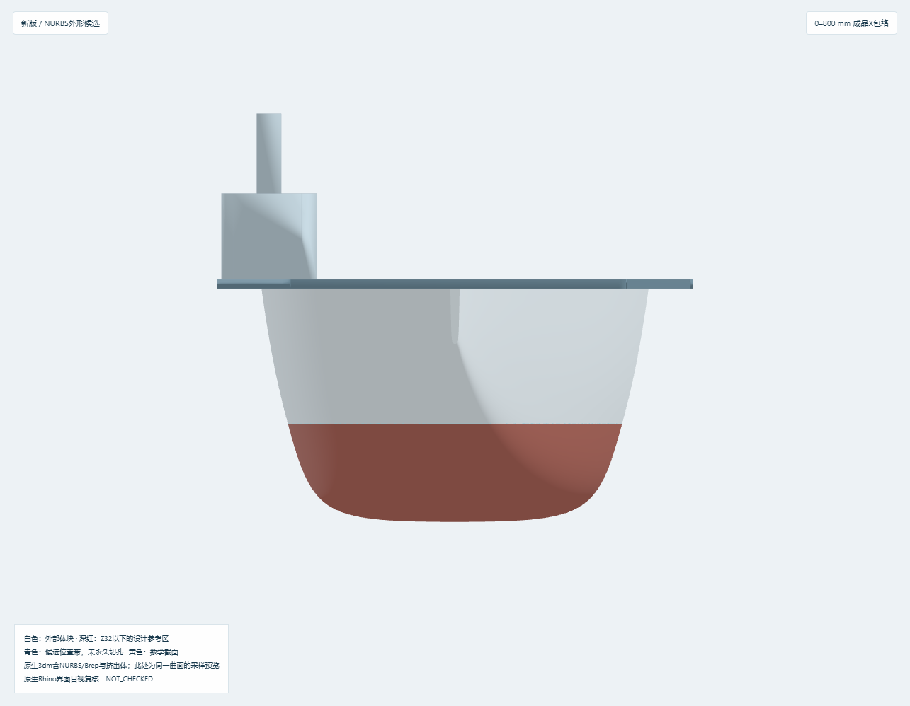
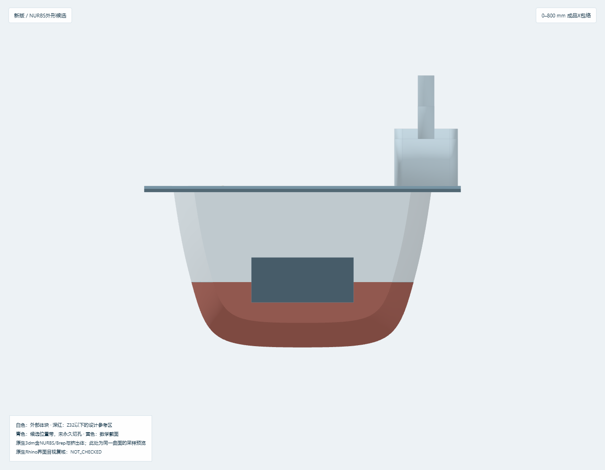
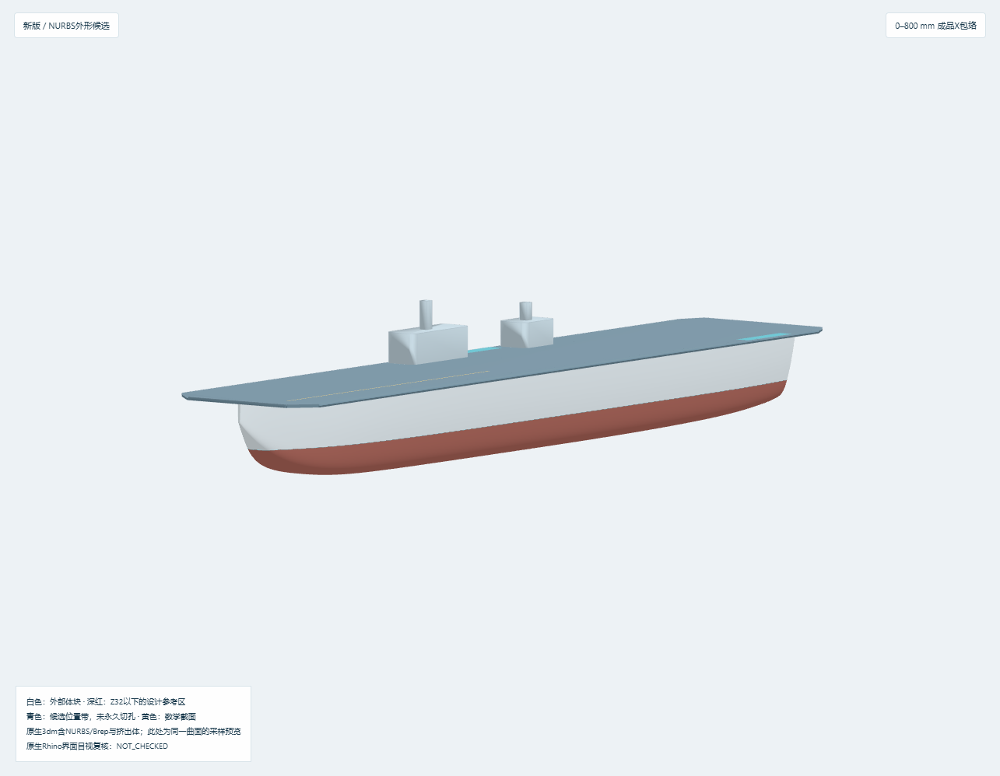
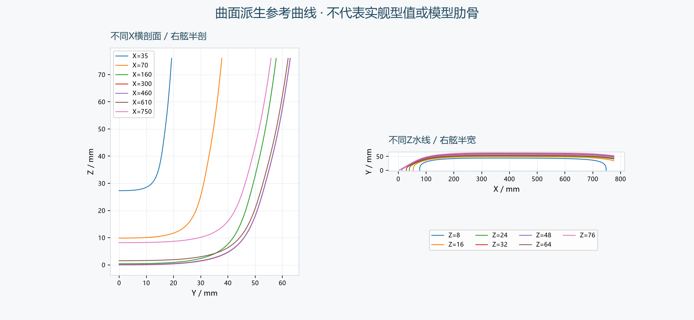
800 mm是成品最大长度包络，不以某个公开实舰长度强制缩尺。本版为可编辑Rhino外形母面研究，不是制造完成的木船，也没有进行下水认证。
旧粗模0–800 mm、毫米单位与约定坐标方向通过文件检查，但全部可视对象是网格，未建立Rhino曲面母面。上部船宽132 mm与155 mm甲板已有区分，仍存在下部过饱满、艏部圆钝、底部折线过渡和纵向重复截面的块状观感。旧版灰色表面是零厚度参考，不是可以直接贴合的薄木蒙皮。原文件与SHA-256完整保留在00_Project_Base。
原版24片骨架没有在新版里继续使用。新文件里14组数学横剖线仅供外形观察，没有新增肋骨、龙骨、纵梁或榫槽。原版内部设备预留、检修盖与地板也没有作为这次已验收结构沿用。
本次改用用户定义的A/B/C/D/Unknown等级。A：官方确认双舰岛、全纵通甲板、电磁弹射与阻拦技术。B/C：专业报道和实船照片支持前后双岛、前岛大、左前单轨、舷侧升降机相对位置和艉部坞舱外观。公开尺寸有260×52、260×50、252×45 m等不同估计，本版均不当官方精确尺寸。
参考照片明确显示宽甲板外伸、船艏收尖及上部船体外飘；无法直接提供可靠水下型值。球鼻艏、舭龙骨、尾鳍、真实轴桨舵及轴架保持Unknown，没有新增。CSIS同页的003型比较图被识别并排除；模拟甲板试验设施只作背景，不用于船体测量。逐图可确认/不可确认内容和源链接见01_Reference。
1. 用左右独立三次NURBS母面重建船体，再派生数学剖面、水线和可视化。新3dm含8个Brep与5个原生挤出体，零Mesh对象，没有把船体合并成一体实体。
2. 甲板维持155 mm工作宽度；上部船体最大宽126 mm，Z=32几何参考线处约108.8 mm，Z=8处约88.7 mm。宽度逐级收缩，形成外伸甲板—上部舷侧—较窄下部—圆舭—底部的连续过渡。
3. 艏部下方收尖、艏底逐渐抬升，保留宽甲板外伸。没有用厚板硬弯，也没有添加未确认球鼻艏。
4. 保留实船外观有依据的横艉体块，收窄并抬升艉底。船体横艉移至X=776，甲板止于X=800，留下24 mm未来长度预算。这只是D模型假设，尚未证明实际轴、桨、舵能全部装入，Phase06仍可能要求回退改外形。
5. 两个升降机位置用青色候选带表示，未永久切孔。舰岛只表达比例与轮廓，不在外形阶段增加设备、栏杆或舰载机。
6. 深红色仅标示Z32以下的设计参考区域，不表示实船已确认水下涂装。Z32不是已确定航行吃水。
| 项目 | 当前工作值 | 类型 |
|---|---|---|
| 最大成品X包络 | 0–800 mm | D 用户约束 |
| 已建船体X范围 | 4–776 mm | D 模型设计 |
| 飞行甲板最大宽 | 155 mm | D 可改工作参数 |
| 上部船体最大宽 | 126 mm | D 曲面计算值 |
| Z32几何参考线处最大宽 | 108.813 mm | D 曲面计算值，非验证吃水 |
| Z8处最大宽 | 88.689 mm | D 曲面计算值 |
| 甲板顶面高度 | Z=79 mm | D 含3 mm体量参考，非最终甲板结构 |
| 总参考高度 | Z=133 mm | D 包含简化舰岛与桅杆 |
| 艉部长度预算 | 24 mm | D 未验证推进安装可行性 |
| 前/后舰岛长度 | 86 / 46 mm | C公开估值参考，具体定位D |
完整参数在02_Hull_Outer_V1/outer_parameters.json，实际计算尺寸在geometry_check.json与key_dimensions.csv。控制点并不是实船型值点。
同尺度三视图中蓝色为新版、棕色点划线为旧版船体。舯部、水线附近和艏艉剖面可直接比较。三维对比采用相同相机。旧版伸出的平台使总显示宽度约189.4 mm，新版目前没有外伸平台实体，因此不能把189.4→155解释为船体变窄的量；船体上部真正的比较是132→126 mm。
旧版没有确定航行水线，所以不能把Z32新旧几何线的差值声称为排水量或阻力改善。细长化和圆舭只是外形设计选择，是否浮得起、横稳性是否足够必须在Phase03计算。
- Phase00：原文件校验一致，毫米与800 mm长度、坐标信息有效；工具未找到可控Rhino窗口，原生软件打开检查仍为NOT_CHECKED。
- Phase01：外部一级特征、图像用途和排除项已登记；未知水下部件隔离。通过参数化外形研究所需资料检查，不代表完成实舰复原。
- Phase02：NURBS有效、左右对称、沿长度无回折、横剖面高度单调；参考曲线与母面采用同一几何。3dm保存回读有效，零Mesh，5个命名视图的相机/视锥有效。浏览器预览与截图另行验证。
- 仍未检查：原生Rhino目视、公平性条纹、整体闭合/裸边/法向、浮力重量、稳定性、最低进水点、实际材料、加工配合、轴桨舵安装和所有装拆路径。不能给出“已可下水”结论。
当前曲面是相互独立的外形参考，未Join成水密分析体。在Phase03，须先在独立分析副本中检查闭合与法向，再进行分吃水排水量计算；不能对当前开口母面直接套排水量结果。
草稿的自动拟合挤出平面导致甲板原生几何向下形成Z73–76，而网页显示Z76–79。另有自动Brep封盖底层平面在保存回读后扩大包围盒的问题；两个岛体也受封盖范围影响。现统一用世界+Z平面，水平构件保留Rhino原生挤出体，不再转为存在包围盒膨胀问题的Brep。
新文件保存后逐个比较13个外形构件的XYZ包围盒，甲板为Z76–79，全部外形为X0–800、Y±77.5、Z0–133 mm。原生/显示包围盒最大差约8.8×10⁻¹² mm，允许差0.02 mm；这仅是内部几何一致性。新增回归检查在旧草稿上可复现失败，修复后通过。文件含8个Brep、5个可编辑挤出体和零Mesh；数学曲线/基准对象另计。
曲面数值与保存后几何共7项检查通过。14条原生拟合水线每条71点抽检，最大同X半宽偏差约0.00346 mm，不是实舰型值精度。构建后阶段状态自动降为待复验，浏览器记录与原生/显示比对记录绑定文件SHA，避免用旧记录验收新文件。
实际ZIP解压后从无关工作目录重建通过，默认geometry_check、display_data和交互HTML与交付版一致。另在解压副本中验证Z36、甲板宽160、横艉X780及艉部预算20的联动，网页无错误/联网请求；交付参数保持原值。重建依赖本机预装Python库，不含依赖的离线安装验证。
完整参数表见parameter_table.csv；关键尺寸见key_dimensions.csv。源码使用包内旧版显示数据和离线浏览库，不再读取旧交付目录的库文件。原生Rhino界面、闭合/法向和实物浮态仍未检查。
首先进入Phase03而不是直接切板：建立封闭分析副本；做不同吃水下的排水质量曲线；提出空船木结构、蒙皮、防水、设备和余量重量预算；再规划低位可滑动电池与设备占位。若水线宽108.8 mm不足以满足所选设备的载荷与横稳性，需要回退Phase02加宽，不能为了视觉纤细强行冻结。
Phase04再按新母面计算约14个主要肋位。35、70、110、160、225、300、380、460、540、610、665、710、750 mm可作为讨论起点；原候选780已在X=776横艉以外，初步改为772或与艉部承力框合并，不能机械照抄原站位。肋骨采用大开孔环框/U框，低中央龙骨与左右连续纵向构件保持内部连通。机库地板必须在设计时验证插入/退出路径，避免再出现被封闭横梁捕获的问题。
推进系统在Phase06从桨盘与舵的空间反向设计。24 mm只是占位预算，不是已通过的双轴双桨双舵方案。必须重新检查末端是否在800 mm以内、叶尖间隙、电机座和推力路径、轴的抽出、舵杆与舵机维护；拆卸时船体外部的工作台空间也需另计。
本次按任务要求停在Phase02。Phase03–13没有开始，不提供新切割轮廓或制造承诺。
本轮已经停在Phase02；以下为外形评审和后续阶段的待定项，不代表现在要求冻结制造尺寸。
| 项目 | 当前工作值 | 分类与待确认内容 |
|---|---|---|
| 总成长度 | X=0–800 mm | D用户硬约束；以后附体仍须计入 |
| 甲板最大宽 | 155 mm | D参数；结合实船俯视比例确认 |
| 上部船体最大宽 | 126 mm | D外形；结合侧前视比例确认 |
| 下部宽度与基线 | Z32处宽108.8129 mm，Z8处88.6895 mm | D；外形评审不代替Phase03载荷与浮态计算 |
| 甲板高度/厚度参考 | 下表面Z76、顶面Z79 | D；3 mm仅体量，不是已定制造结构 |
| 船体艏艉 | X4–776 | D；确认尖艏与横艉外观，不能当实舰型值 |
| 艉部长度余量 | 24 mm | D；须后续用实际桨盘、舵和抽轴空间检验 |
| 前舰岛 | X330–416，Y45–76，长度86、宽31 mm | 长宽参考C估值；坐标/高度D |
| 后舰岛 | X500–546，Y45–76，长度46、宽31 mm | 长宽参考C估值；坐标/高度D |
| 右舷升降机候选带 | X426–490，Y64–77.5 | C相对位置，D候选坐标；尚未切孔，未冻结平台尺寸 |
| 左艉升降机候选带 | X672–738，Y-77.5–-64 | C相对位置，D候选坐标；尚未切孔 |
| 左前轨迹示意 | X24–330，Y=-39 | B定性外观，具体位置与机构尺寸D |
| 艉门外观示意 | 横艉X776附近、宽50、高22 mm | B坞舱存在性；门尺寸D，不含内部坞舱 |
| 数学横剖面 | 14个X位置 | D参考线；不是肋位或真实肋骨 |
Unknown：真实水下型线、球鼻艏、舭龙骨、尾鳍、轴/桨/舵数量及形状、轴架和真实内部布置。未确认不等于不存在；不为这些项目补造实舰细节。
后续顺序：先完成外形人工评审；再建立独立封闭分析副本和重量/浮态基准；之后设计骨架、插接、推进与蒙皮。当前文件不能直接发给切割厂。
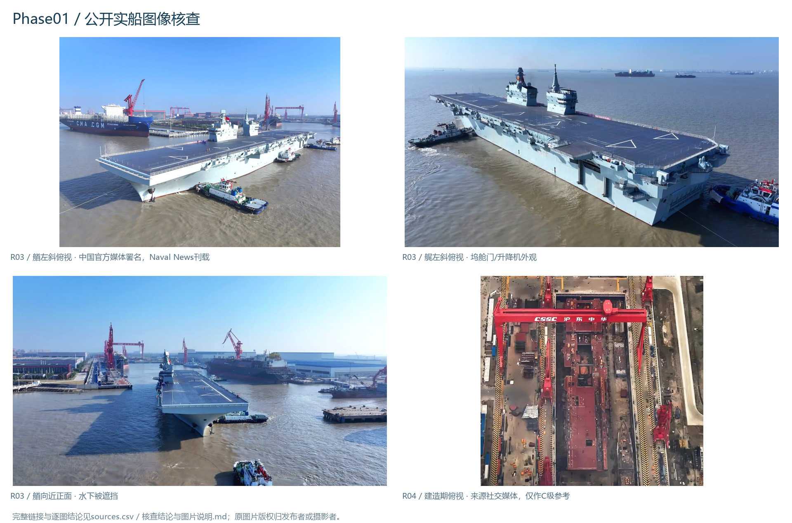
核查日期2026-10-16。采用本次用户新定义：A官方直接确认、B多个独立高可信来源一致、C图片测量或工程推断、D模型假设、Unknown资料不足。旧版S/A/B/C标签不能原样沿用。
国防部转载新华社命名报道 ↗确认双舰岛、全纵通飞行甲板、电磁弹射和阻拦技术，属于A。该网站本轮直接下载有证书主机名错误，未绕过；通稿可从搜索缓存及前序核对文本验证。资料没有给本模型可用的精确型值。
Naval News下水报道 ↗明确描述右舷岛间及左舷艉部升降机，并提供艉部照片说明；2025年首次海试照片 ↗补充艏艉斜俯视。单一页面、同一媒体转引或同批照片均不能自行升级为B，具体采用等级按下面矩阵逐项判断。
| 特征 | 独立依据与限制 | 采用等级 |
|---|---|---|
| 双岛、全纵通、电磁弹射与阻拦技术 | R01官方直接确认 | A |
| 两舷各一飞机升降机 | R05 CSIS独立商业卫星分析 + R02下水实船图像/报道，获取方式不同 | B，仅限两舷各一的定性关系 |
| 单条左前长槽/轨迹外观 | R04建造期过航照片 + R05不同时刻商业卫星分析 | B定性外观；最终机构尺寸仍未知 |
| 右舷岛间、左舷艉部具体相对位置 | R02与R06均有描述，但无法证明所用图像依据完全独立 | C，保留候选位置带，不永久切孔 |
| 前岛较大、后岛较小及具体体量 | R03实船照片解读与R06非官方估算 | C，具体毫米尺寸/坐标D |
| 艉部坞舱存在 | R02艉部图像/说明 + R07 USNI独立记者海试报道 | B存在性；舱形和门尺寸D |
| 实舰船长、宽度和水下形状 | 不同估算冲突、无型值表 | C估算/Unknown；本模型尺寸D |
R07为USNI News首次海试报道，2025-11-14 ↗。这里没有把新闻机构名称当作所有内容的统一可信等级。
| 本地图片 | 可观察内容 | 不可得结论 | 模型影响 |
|---|---|---|---|
| navalnews_trials_1.jpg | 官方媒体署名的艏左前斜俯视：宽而近矩形的飞行甲板、甲板外伸、前倾/收尖艏柱、舷侧外飘、前大后小双岛 | 斜拍不能无标定量出真实宽度；水线下不可见 | 保持宽甲板，缩小下部船体；船艏以收尖与上部外伸区分 |
| navalnews_trials_2.jpg | 艉左后斜俯视：左艉升降机、方形艉上部、艉部门和下部收缩趋势 | 水下尾鳍、轴架、螺旋桨、舵数量均不可见 | 保留横艉和坞舱门外形示意；不强行把整个横艉“流线化” |
| navalnews_trials_3.jpg | 艏向近正面外观，甲板悬挑、艏柱收尖及舰岛体块关系 | 水面遮挡水下曲线；不是侧面正投影 | 用于艏向外观交叉；不据此计算吃水或浮力 |
| navalnews_construction_1.jpg | 建造期正俯视近似图：左前长槽与甲板平面总体布局 | 船体尚未完成；照片经透视，不能当实船型值表 | 只作甲板布局辅助，等级C |
| navalnews_construction_2.png | 无人机研究设施及甲板模拟区域 | 不是076船体，不提供原舰内部结构 | 仅背景资料，排除为船体尺寸来源 |
| csis_slide1.jpg | 2024-07-04厂区全景，图中明确标注076所在船坞 | 船太小，不能直接提取可用横剖面 | 记录出处与日期，不作型线拟合 |
| csis_slide4.jpg（未列入交付图片） | 文字明确写TYPE003 aircraft carrier | 不是076 | 排除；同一专业文章中的比较图不能混用 |
图片来源链接与文件名对应见image_sources.json，图片版权归原发布者/摄影者，本包仅作项目参考与审阅，不能因此视为取得再发行许可。R03三图均属同批媒体照片，不能作为三个独立来源投票确认。
CSIS建造期卫星估算约260×52 m；Naval News在2024年报道约260×50 m，而2025年报道约252×45 m。它们均不能升级为官方精确主尺度。本次不强制选择一个缩尺，800 mm只约束成品最大X包络。155 mm甲板宽保留为D工作参数。上部船体、水线与船底尺寸完全按模型外形与后续制造需要提出，不宣称照片精确测量。
| 项目 | 本轮结论 | Phase02行动 |
|---|---|---|
| 球鼻艏 | Unknown，未取得足够清晰、来源可核的完整水下艏图 | 不画成已确认球鼻艏；Phase07再研究可替换模块 |
| 舭龙骨 | Unknown，现有图水面以下被遮挡 | 不添加 |
| “尾鳍” | Unknown，词义可能对应舵、轴架、艉鳍或其他构件 | 不把模糊称呼直接变成零件 |
| 螺旋桨/推进轴数量 | Unknown，公开文章的发动机/电推论述也不能直接证明轴数 | 不画实际轴桨；将来可用D双轴候选 |
| 舵数量/舵形 | Unknown | 不添加 |
| 轴架、尾轴管、其他水下附体 | Unknown | 不添加 |
| 水下型线 | Unknown，缺少可用实船型值 | 新下部母面明确标D，不用于声称复原 |
没有找到可核实证据不等于这些部件不存在。本次检索包括中英文“076/四川舰+球鼻艏/舭龙骨/尾鳍/propellers/rudders/bulbous bow/bilge keel”，低可信论坛、其他舰艇、模型照片和概念图没有作为确认依据。
保留长甲板、双岛、单条左前轨迹、两处舷侧升降机的相对位置和横艉坞舱门外观。甲板边缘先标候选带，不永久切孔。下部采用较窄的参考水线与圆舭过渡、艏部收尖、艉底上抬；它们为D模型设计。当前水线Z=32 mm只是比较剖面的几何基准，Phase03前不称为已确定航行吃水。
Phase01检查通过的含义是：外形研究有可追溯依据，未知项已隔离，允许进入参数化外形候选。它不意味着水下细节、原舰尺寸或模型浮态已经确认。
| ID / 来源 | 日期 | 等级 | 采用边界 |
|---|---|---|---|
| R01 / 国防部/新华社下水命名通稿 | 2024-12-27 | A 已确认 | 保留外部一级特征，不锁定实舰尺寸 |
| R02 / Naval News launch report / Alex Luck | 2024-12-27 | C 图像/尺寸解读；B仅限特征矩阵交叉项 | 定性定位，具体坐标保持D；不采用动力推断 |
| R03 / Naval News sea trial photographs / Chinese state media credited | 2025-11-14 | C 图像/尺寸解读；B仅限特征矩阵交叉项 | 上部外形定性约束；长度宽度不按此强制缩尺 |
| R04 / Naval News construction overflight / social-media-origin photo | 2024-06-17 | C 工程推断（原照片来源有限） | 辅助顶面布局，不能单独冻结尺寸 |
| R05 / CSIS 2024 satellite analysis | 2024-08-01 | C 图像/尺寸解读；B仅限特征矩阵交叉项 | 尺寸冲突登记；图1仅船厂全景，图4为003并排除 |
| R06 / CMSI Translation26 / 非官方《舰载武器》分析 | 2026-02-12，原文2025-06 | C 工程推断/公开研究估值 | 仅保留外部体块大小参考，具体毫米位置D |
| R07 / USNI News / Aaron-Matthew Lariosa | 2025-11-14 | B 仅坞舱存在性的交叉项 | 与R02外观资料交叉，不采用登陆艇数/性能推断 |
旧模检查与SHA · 外形计算记录 · Phase02阶段检查 · 7项几何测试 · 浏览器验证 · 13构件原生/显示比对 · 实际ZIP解压重建 · 完整参数表 · 来源表